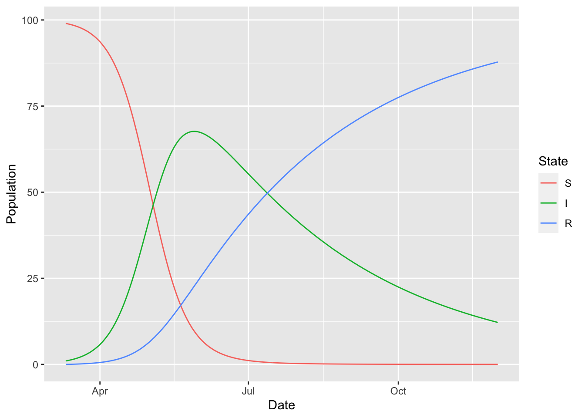
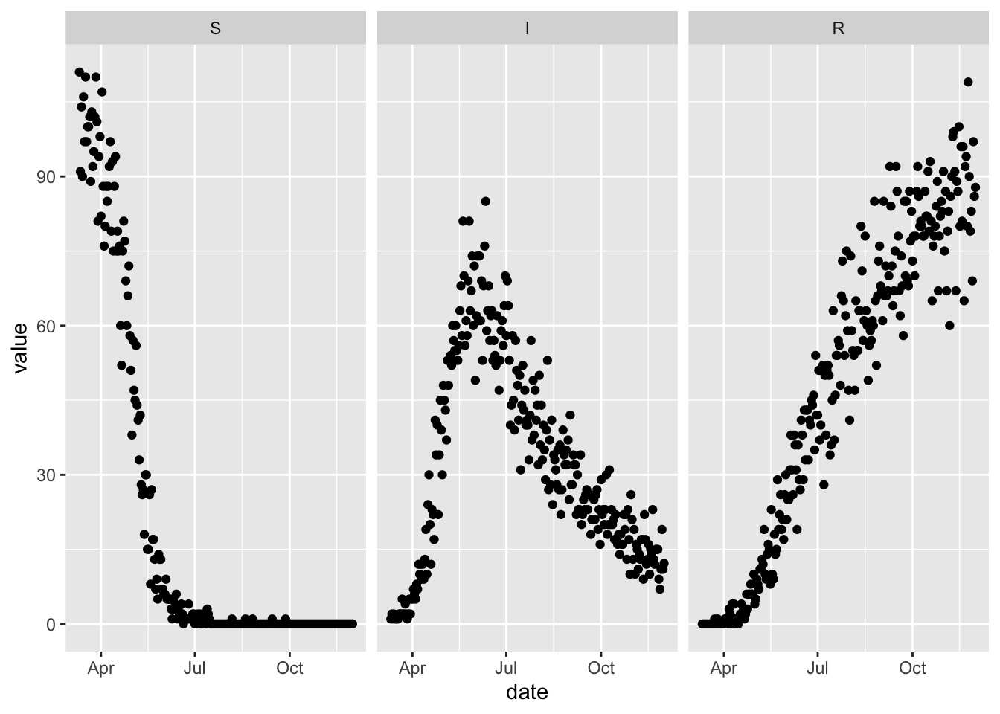

4 Simulation
All previous chapters were concerned with defining a compartmental model. In this chapter we switch to getting results from a defined model.
Once a model object is defined, it can be used to generate simulations using the simulation_history function.
The output contains a column for the simulation date, one column for each state variable (S, I and R in this case), and one column for every time-varying rate (S_to_I). The names of the time-varying rates are always of the form {from_state}_to_{to_state}. The reason why S_to_I is time-varying in this model is that it depends on a state variable, I, which is itself varying at every time-step. The rate_summary function can be used to remind us of this fact.
## from to formula
## S_to_I S I (I) * (beta) * (1/N)
## I_to_R I R (gamma)We see here that S_to_I does indeed depend on I in its formula, whereas I_to_R depends only on a parameter, gamma.
Note that the above command uses the tidyverse-style pipe, %>%, operator and another tidyverse function, select. This illustrates a general philosophy of McMasterPandemic, which is that we try to make the outputs plug into other existing and popular tools rather than reinvent existing functionality for a narrower purpose. For example, the rate_summary function returns a data frame that can be manipulated by other data frame manipulation tools.
We can plug into other existing and popular tools to make a plot of the simulated epidemic trajectory.
(sir
%>% simulation_history
%>% select(-S_to_I)
%>% pivot_longer(-Date, names_to = "State", values_to = "Population")
%>% mutate(State = factor(State, levels = topological_sort(sir)))
%>% ggplot
+ geom_line(aes(Date, Population, colour = State))
)
There are a few places you can go from here:
- Learn how to fit a model to observed data through Calibration
- Learn how to modify the values of parameters in simulation time using Time Varying Parameters
- Keep reading to learn about simulating with Observation Error
4.1 Observation Error
sir_with_obs_err = (sir
%>% update_params(c(
nb_disp_S = 1e4,
nb_disp_I = 1e4,
nb_disp_R = 1e4
))
%>% update_error_dist(
S ~ negative_binomial("nb_disp_S"),
I ~ negative_binomial("nb_disp_I"),
R ~ negative_binomial("nb_disp_R")
)
)set.seed(1L)
(sir_with_obs_err
%>% simulation_history(obs_error = TRUE)
%>% select(Date, S, I, R)
%>% pivot_longer(-Date, names_to = "var", values_to = "value")
%>% rename(date = Date)
%>% mutate(var = factor(var, levels = topological_sort(sir)))
%>% ggplot
+ facet_wrap(~ var)
+ geom_point(aes(date, value))
)